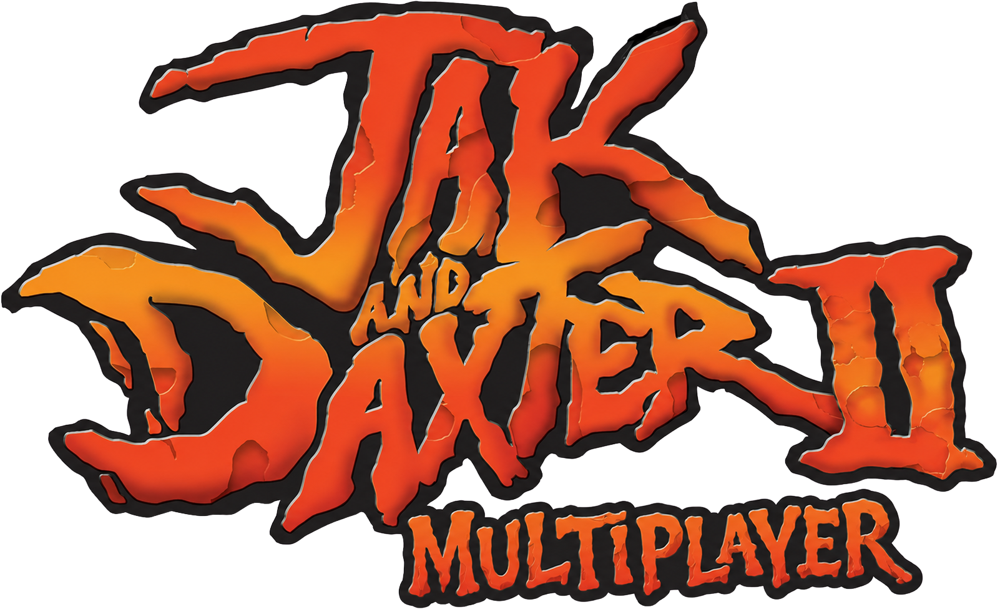
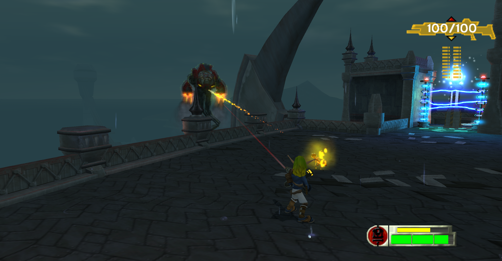

Use the same version
Different versions may not connect or may behave differently during a session.
Two-player mod for OpenGOAL

One player hosts as Jak and the other joins as Daxter. Here you can find information about starting a session, connecting over LAN or the internet, and fixing the most common problems.

The first release covers Act I, ending after the palace Baron boss fight. Bugs, crashes, desyncs, and unfinished behaviour should be expected.
Mod updates
Before playing
The OpenGOAL launcher handles installation. Both players only need to make sure they are launching the same mod version.
Different versions may not connect or may behave differently during a session.
The host owns the save and should trigger important mission and world events.
The second player connects through Find LAN or Direct Connect.
The host may need to allow OpenGOAL through Windows Firewall and forward the game port shown in the menu.
Jak · Host
Choose the save, wait for Daxter to connect, then lead important mission interactions once the game starts.
Start the mod and select Host Game from the title menu.
Choose New Game for a fresh run, or Load Game to continue an existing save.
Stay on the host screen. The game continues automatically after the second player connects.
For internet play, send the joining player your public IP address and the port shown in the host menu.
Daxter · Join
Use Find LAN when both players are on the same network. Otherwise, connect directly with the host's address.
Start the same mod version as the host and select Join Game.
When both players are on the same local network, choose Find LAN and select the host.
If LAN discovery does not find the game, choose Direct Connect and enter the address and port provided by the host.
Entering the address
Select the Address or Port field with on a controller, or Space on a keyboard. Type the value, then press the same button again to finish editing.
An invalid IP address is shown in red.
Run two windowed game instances side by side on the same monitor. Host in one window, then choose Join Game → Find LAN in the other.
Each instance should recognize a connected controller. With only one controller, use the controller for one window and the keyboard for the other.
Troubleshooting
Use Reconnect. It is currently the quickest fix for most client-side desyncs, visual problems, and soft-locks.
Current build
These issues are expected in the first release and do not necessarily mean the connection was set up incorrectly.
A remote player can miss an animation trigger. For example, a jump may look like a falling animation until the player lands.
Traffic is mainly controlled by the host. When Daxter moves outside Jak's traffic radius, the client may briefly remove traffic before spawning it locally.
Reconnect is currently the main recovery option when the client enters a broken state.
The campaign has not been tested in every possible situation. Reproducible bugs and game-breaking issues can be reported on GitHub.
Found a game-breaking bug?
Open an issue on the mod's github!